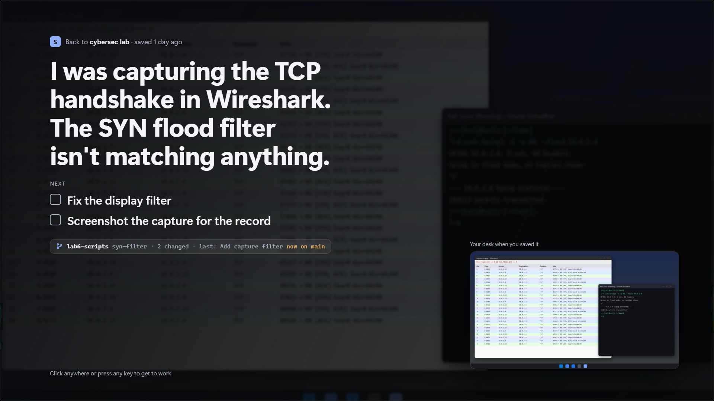
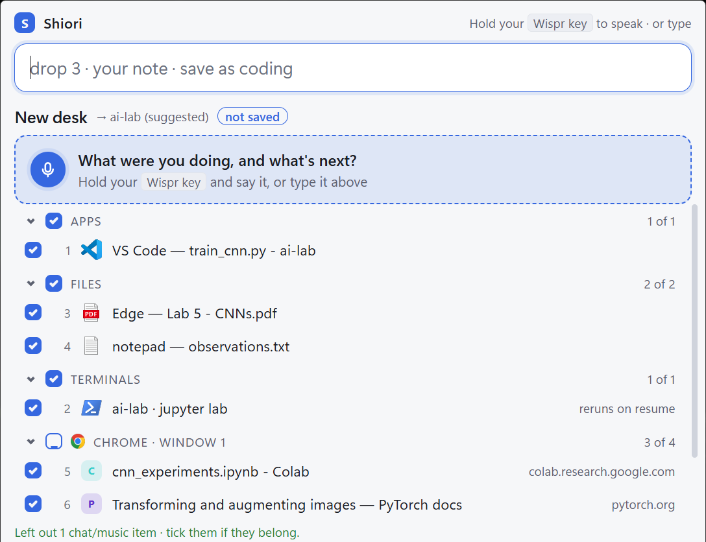
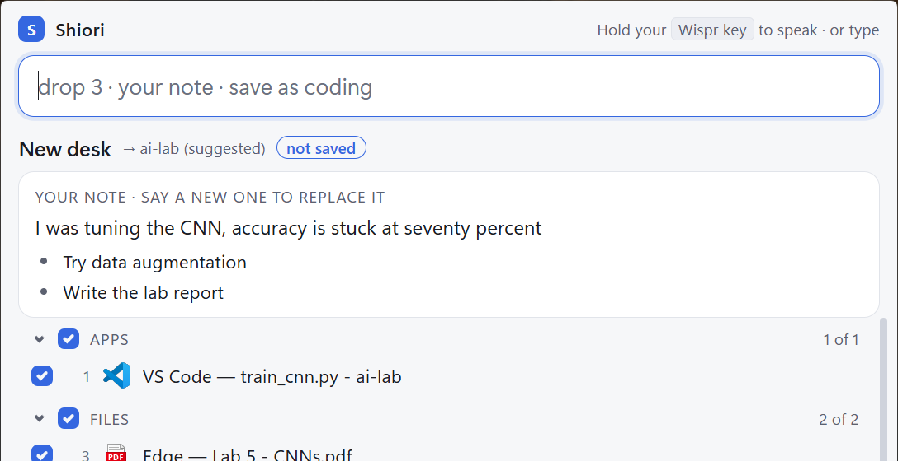
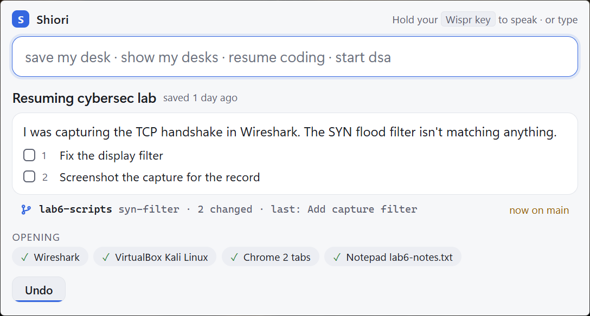
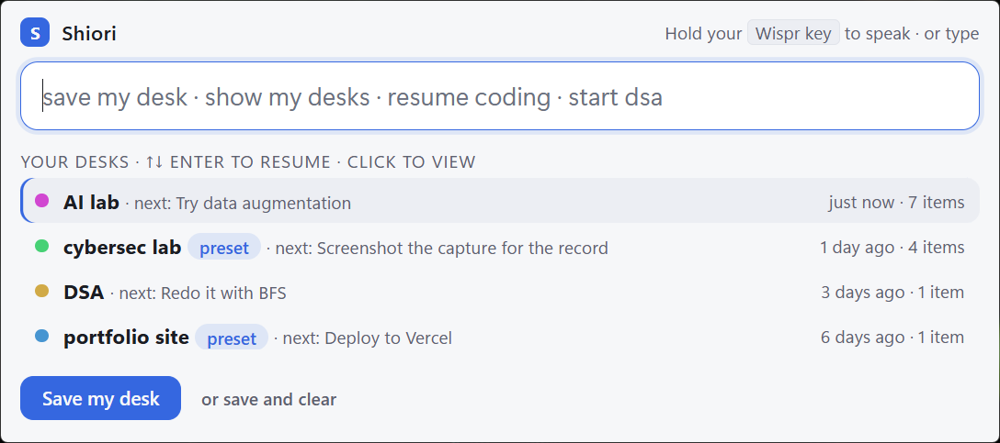

Leave a bookmark in your whole desk.
Say “save my desk” and Shiori keeps every window, tab, terminal and file you have open, with a spoken note on where you were. Days later, say “resume”. It all comes back, and your note is the first thing you read.

How it goes
Three sentences, and you can walk away.
Press Ctrl Alt S (or your own hotkey), hold your Wispr key and talk.
Save what's open
Everything appears, already ticked: editor folders, tabs, terminals, files. Music and chat start unticked. Drop anything with a click or a word.
“Save my desk.”

Say what's in your head
Where you were, what's next. Every “next…” becomes a step you can tick off later.
“I was tuning the CNN, accuracy is stuck at seventy percent. Next, try data augmentation.”

Come back
Everything reopens where it was, and you're warned if you've switched git branch since.
“Resume cybersec lab.”

See it work
Two labs, a day apart. One sentence each.
Not a wall of windows when you come back: your desk reopens behind a full-screen note with what you were doing, what's next, and the branch you were on. Any key, and you're back at work.
What comes back
Not just windows. Where you were in them.
The things that make “where was I?” take ten minutes.
- Browser tabs
- As a named tab group in Chrome, Edge, Brave or Opera. A lecture at the second you stopped.
- Terminals
- In their folders. Dev servers like
npm run devorjupyter labstart again; nothing else re-runs. - Editors
- VS Code, Cursor and Windsurf on the same folder. Explorer folders and apps too.
- Office
- Excel at the same sheet and cell, PowerPoint at the same slide, Word documents.
- PDFs and notes
- Back in the app they were open in.
- Git
- Branch, uncommitted changes, last commit, and a warning if you've switched since.
Everything by voice
Every button has a sentence.
And every sentence works typed. Half-said words ask before they act.
| save my desk | Gather what's open |
| drop 3 · drop spotify | Leave something out |
| save as ai lab | Name it and save (or just “save”) |
| save and clear | Save, then close what you saved |
| resume · resume dsa | The last one, or any by name |
| tick 1 | Tick off a next step |
| pin this · start dsa | A set-up you start every day |
| undo | Take back the last resume, clear or delete |

Shiori is Japanese for a bookmark: the ribbon you leave in a book to open it again at the same page. Closing your laptop shouldn't mean losing your place. This is that ribbon, for everything on your screen and everything in your head.
Install
A minute, no admin.
- Download Shiori-setup.zip, right-click it, Extract All.
- Double-click Install Shiori.cmd. If Windows says “Windows protected your PC”: More info → Run anyway. Shiori isn't code-signed yet.
- Press Ctrl Alt S. A short guide walks you through your first desk. Browser tabs: right-click the tray icon → Set up browser tabs. The hotkey can be changed there too.
Private
Your desk stays yours.
- No account, no cloudDesks are plain files in
%LOCALAPPDATA%\Shiori. - No AI serviceUnderstanding what you say happens on your PC. Works offline.
- Your choice on picturesDesk pictures can be turned off, and the old ones deleted, from the tray.